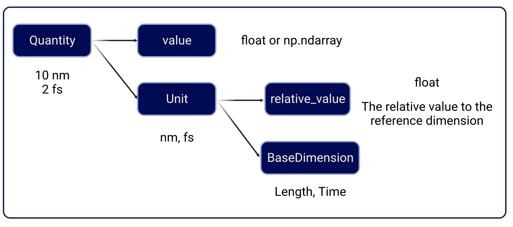

How to use mdpy.unit package#
[1]:
import mdpy as md
import numpy as np
from mdpy.unit import *
from mdpy.unit.unit_definition import *
from mdpy.error import *
Overview#

mdpy.unit package contains three classes:
mdpy.unit.BaseDimensionclassmdpy.unit.Unitclassmdpy.unit.Quantityclass
BaseDimension#
mdpy.unit.BaseDimension defines the basic dimension of a unit.
The __str__ method displays the reference dimension used in mdpy.
In MDPy, the reference dimensions are consistent with SI unit system.
[2]:
print(constant, end='; ')
print(length, end='; ')
print(mass, end='; ')
print(time, end='; ')
print(temperature, end='; ')
print(charge, end='; ')
print(mol_dimension, end='; ')
; m; kg; s; k; c; mol;
The multiplication and division of BaseDimension gives new BaseDimension object:
[3]:
acceleration = length / time**2
force = mass * acceleration
print(acceleration, force)
m/s^2 kg*m/s^2
Unit#
mdpy.unit.Unit class, consisting of the relative_value and BaseDimension, defines a specific physical unit.
The relative_value defines the relative scale to the reference unit, which is shown above.
The __str__ method displays the relative value and reference unit.
[4]:
meter = Unit(length, 1)
nanometer = Unit(length, 1e-9)
print(meter, nanometer)
1.00e+00 m 1.00e-09 m
The multiplication and division of Unit creates a new Unit object:
[5]:
meter = Unit(length, 1)
microsecond = Unit(time, 1e-6)
meter_per_microsecond = meter / microsecond
print(meter_per_microsecond)
1.00e+06 m/s
Quantity#
mdpy.unit.Quantity class, consisting of value and Unit, defines a physical quantity.
The __str__ method displays the value and unit.
[6]:
nanometer = Unit(length, 1e-9)
print(Quantity(1, nanometer))
print(Quantity(np.array([1, 2, 3, 4]), nanometer))
[1.] (1.00e-09 m)
[1. 2. 3. 4.] (1.00e-09 m)
Basic operations, including addition, subtraction, multiplication, division, and power, are closed for Quantity
Notice:
All operations can only be performed between
Quantityobjects.Addition and subtraction can only be performed between
Quantityobjects with the sameUnit.
[7]:
f = Quantity(1, meter) * Quantity(1, kilogram) / Quantity(1, second)**2
print(f, f + Quantity(2) * f)
[1.] (1.00e+00 kg*m/s^2) [3.] (1.00e+00 kg*m/s^2)
[8]:
2 * f
[8]:
NotImplementedError("* between <class 'int'> and mdpy.unit.Quantity is not implemented")
[9]:
try:
f + Quantity(1, meter)
except UnitDimensionMismatchedError as e:
print(e)
kg*m/s^2 and m can't be added together
Physical constant#
mdpy.unit package also defines frequently used physical constants, including:
KB: The Boltzmann constantEPSILON0: The permeability of vacuumNA: The Avogadro constant
[10]:
print(Quantity(300, kelvin) * KB)
print(Quantity(1, elementary_charge**2/nanometer) / EPSILON0)
print(Quantity(1, mol) * NA)
[4.1419458e-21] (1.00e+00 m^2*kg/s^2)
[1.745916] (1.66e-18 m^2*kg/s^2)
[6.0221e+23] (1.00e+00 )
Unit conversion#
The mdpy.unit package has two main jobs:
To convert all kinds of unit systems to the default unit system used in MDPy.
To convert the result from MDPy in the default unit system to frequently used unit systems.
To achieve this, Quantity class provides a convert_to method:
[11]:
kbt = Quantity(300, kelvin) * KB
print('Origin: ', kbt)
kbt_default = kbt.convert_to(default_energy_unit)
print('Default unit: ', kbt_default)
kbt_kj_per_mol = kbt.convert_to(kilojoule_permol)
print('kj/mol: ', kbt_kj_per_mol)
print('Check consistence: ', kbt/kbt_default, kbt/kbt_kj_per_mol)
Origin: [4.1419458e-21] (1.00e+00 m^2*kg/s^2)
Default unit: [0.00024943] (1.66e-17 m^2*kg/s^2)
kj/mol: [2.494321] (1.66e-21 m^2*kg/s^2)
Check consistence: [1.] (1.00e+00 ) [1.] (1.00e+00 )